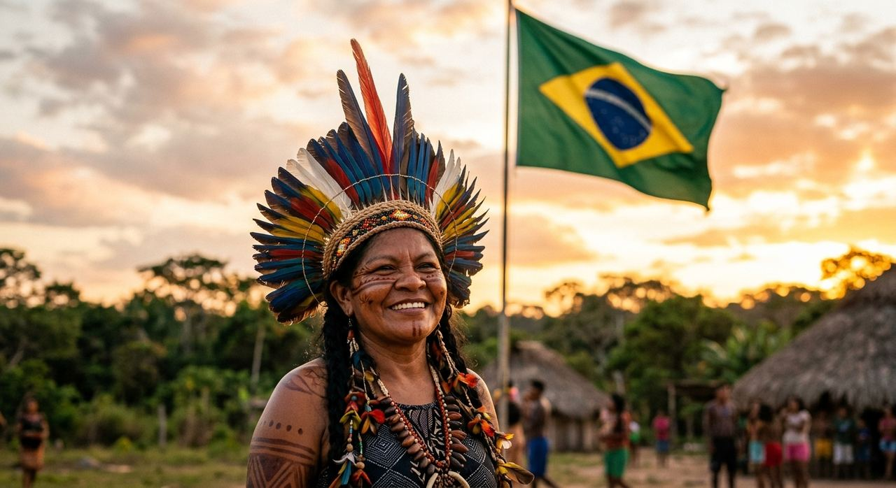
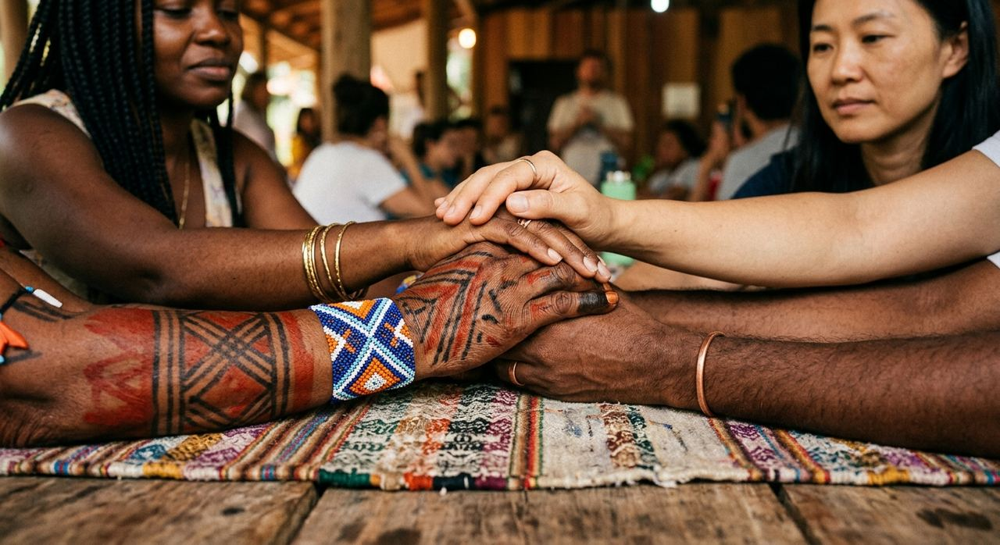
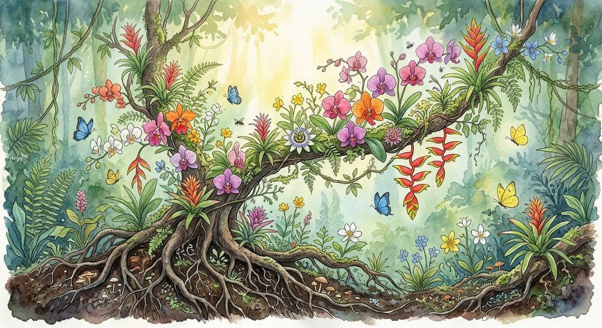
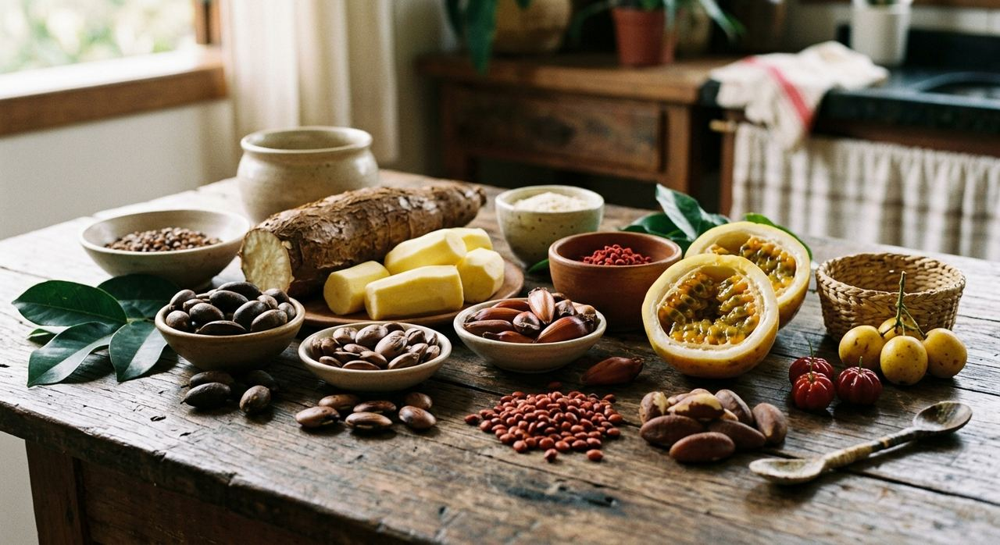
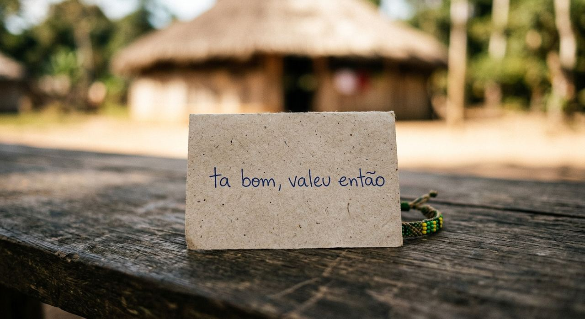

Há males
que não vêm para ferir:
vêm para despertar.
Esta página não acusa um povo, nem pede que alguém carregue culpa. Ela fala ao coração de quem, um dia, aprendeu na escola uma história que não era a verdadeira — e nunca teve culpa de não saber. A verdade contada com afeto não humilha ninguém: ela liberta.

Entre o povo e a violência, existe uma distância
Muita gente em Portugal — e muita gente aqui no Brasil — cresceu ouvindo que os portugueses descobriram o Brasil e trouxeram a modernidade: os prédios, as escolas, a técnica, o mundo. Isso foi ensinado nas escolas deles, nos livros didáticos, com a mesma disciplina com que se ensina a tabuada. Repetir uma lição que se aprendeu na infância não é maldade — é apenas não ter tido, ainda, a chance de conhecer o outro lado.
Quem escreveu essa história foram os vencedores, e os vencedores contaram a versão que lhes convinha. A criança portuguesa não escolheu acreditar nisso, assim como a criança brasileira não escolheu aprender que aqui "não havia civilização". As duas receberam a mesma herança: uma meia-verdade confortável. Reconhecer isso não diminui Portugal, não diminui a Europa e não pede arrependimento eterno.
O que pedimos é mais leve e mais profundo: escuta. Ninguém precisa mudar de pátria para mudar de olhar. E uma nação não fica menor quando reconhece o que houve — fica maior, mais justa e mais verdadeira.

"Há males que vêm para o bem"
O ditado brasileiro diz que há males que vêm para o bem. É preciso cuidado ao usá-lo aqui, e nós o usamos de coração aberto:
A violência nunca foi boa. Nenhum assassinato, nenhuma terra tomada, nenhuma língua silenciada trouxe bem algum. O mal foi mal, inteiro.
Mas houve algo que o mal não conseguiu: acabar com esse povo. E é daí, do fundo do que quase foi destruído, que brota o bem — não como prêmio da agressão, e sim como vitória da resistência. O bem não veio dos que invadiram: veio dos que sobreviveram.

Todos nós falamos indígena todos os dias
A língua geral dos Tupi corre na boca de cada brasileiro. Palavras que usamos sem pensar nasceram aqui muito antes de 1500 — e continuam vivas no nheengatu, no tupi e em tantos outros idiomas.

A mandioca é a base da nossa comida; a rede de dormir, o banho de rio, o cuidado com a floresta, o nome de tantas cidades. O Brasil mais brasileiro — o que estrangeiro chama de "alma do país" — é, no fundo, indígena. Apagar essas pessoas foi o projeto; apagar o que elas são, ninguém conseguiu. Isso também é esperança: o que é verdadeiro não se apaga, apenas espera ser reconhecido.
Como o coração aprende a verdade
Nada aqui exige que você escolha um lado contra alguém. Exige apenas gestos simples — do tipo que cabem no dia a dia e mudam uma vida inteira.
-
1
Ouça quem viveu
Antes de qualquer livro, escute os próprios povos: o ISA, o Cimi, a mídia indígena. Não fale sobre eles; aprenda a ouvir com eles.
-
2
Conte a história certa às crianças
Onde o livro didático disser "descobrimento", corrigi com carinho: foi invasão, e havia gente aqui. A próxima geração não precisa herdar a meia-verdade.
-
3
Respeite a terra como deles
Apoiar a demarcação não é tirar de ninguém: é devolver o que foi tomado. Terra indígena também protege a água, o ar e o clima de todos.
-
4
Aprenda um nome, uma palavra
Chame cada povo pelo nome — Guarani, Yanomami, Guajajara, Pataxó, Kaingang. Dizer "índio" é apagar 305 nações numa palavra só.
-
5
Não confunda passado com pessoas
Reconhecer o que a colonização fez não é acusar quem nasceu depois dela. A verdade reconcilia; só o silêncio separa.
Para quem chegou até aqui
Especialmente para quem descende de quem aportou em 1500:
Nós não escrevemos estas páginas para acusar você. Você não escolheu nascer dentro de uma história que já vinha pronta, contada inteira de um lado só. Cresceu ouvindo que a sua gente trouxe o mundo para estas terras — e é natural acreditar no que a escola e a família ensinaram com tanto cuidado.
Só queremos uma coisa, e é simples: que você sinta. Que ao ler o nome de uma nação que não existe mais, algo se mova dentro de você. Que, quando ouvir a palavra "índio", você não veja uma figura do passado, mas um povo com nome, rosto, língua e futuro. Que a bondade que existe em tanta gente deste país — e do outro lado do oceano — encontre a verdade e faça as pazes com ela.
A verdade não tira nada de ninguém. Ela devolve. Devolve o nome, a língua, a terra, a dignidade. E devolve também a nós, brasileiros, algo que andávamos perdendo sem saber: a chance de sermos, finalmente, um país inteiro, sem ninguém apagado da própria história.
Quando os povos originários forem reconhecidos, o Brasil será mais verdadeiro — e mais bonito. Isso não é perda para ninguém. É a nossa mais antiga e mais bela herança.
— Brasil Originário, com respeito e esperança
